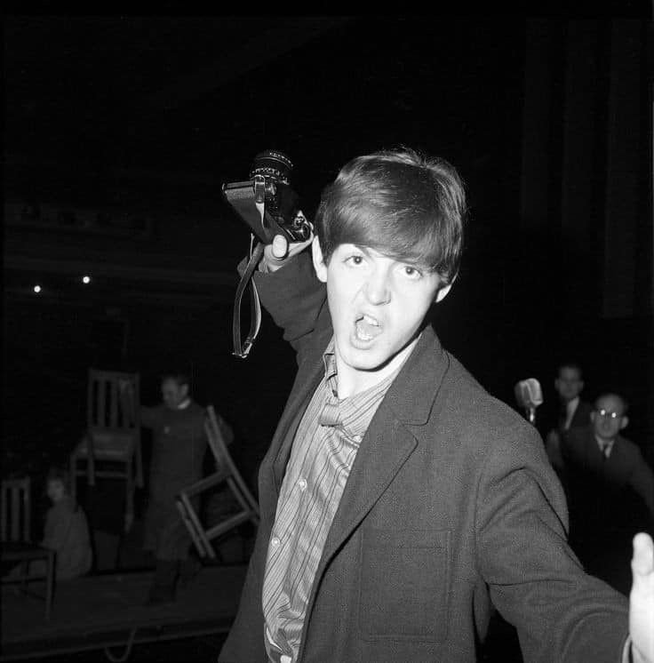
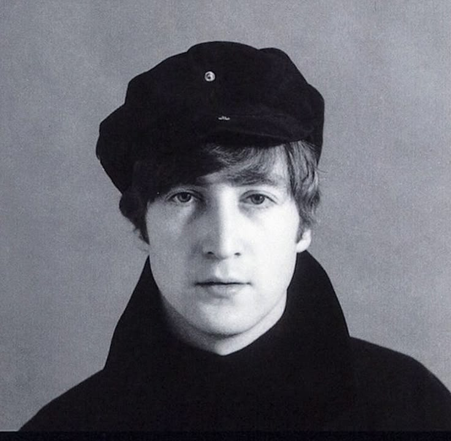
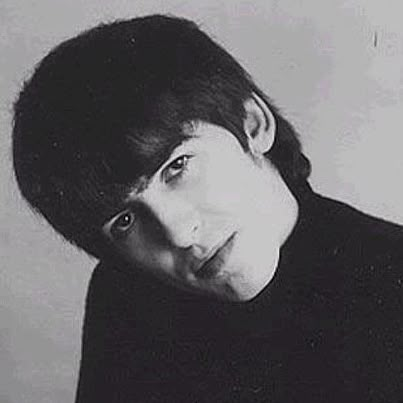

.jpg)
Os Beatles foram uma banda de rock inglesa formada em Liverpool em 1960. A banda era composta por John Lennon , Paul McCartney , George Harrison e Ringo Starr. Eles são considerados a banda mais influente da música popular e foram fundamentais para o desenvolvimento da contracultura dos anos 1960 e para o reconhecimento da música popular como forma de arte. Com raízes no skiffle , beat e rock 'n' roll dos anos 1950 , seu som incorporava elementos da música clássica e do pop tradicional de maneiras inovadoras. Eles também exploraram estilos que iam da música folclórica e indiana à psicodelia e ao hard rock . Como pioneiros na gravação, composição e apresentação artística, os Beatles revolucionaram muitos aspectos da indústria musical e foram frequentemente divulgados como líderes dos movimentos juvenis e socioculturais da época.
Liderados pelos principais compositores Lennon e McCartney , os Beatles evoluíram do grupo anterior de Lennon, os Quarrymen , e construíram sua reputação tocando em clubes em Liverpool e Hamburgo , Alemanha Ocidental, a partir de 1960. Lennon, McCartney e Harrison, juntos desde 1958, tiveram vários bateristas antes de Starr se juntar à banda em 1962. O empresário Brian Epstein os transformou em um grupo profissional, e o produtor George Martin desenvolveu suas gravações, expandindo enormemente seu sucesso nos Estados Unidos depois que assinaram com a EMI e alcançaram seu primeiro hit, " Love Me Do ", no final de 1962. À medida que sua popularidade crescia e se transformava na frenética " Beatlemania ", a banda ganhou o apelido de " Os Fab Four ". No início de 1964, os Beatles já eram estrelas internacionais e haviam alcançado níveis sem precedentes de sucesso de crítica e público. Eles se tornaram uma força motriz no ressurgimento cultural da Grã-Bretanha, inaugurando a Invasão Britânica no mercado pop dos Estados Unidos. Eles fizeram sua estreia no cinema com A Hard Day's Night (1964).
O crescente desejo de aprimorar seus trabalhos em estúdio, aliado à natureza desafiadora de suas turnês, levou os Beatles a se aposentarem dos palcos em 1966. Durante esse período, eles produziram álbuns de maior sofisticação, incluindo Rubber Soul (1965), Revolver (1966) e Sgt. Pepper's Lonely Hearts Club Band (1967). Obtiveram ainda mais sucesso comercial com The Beatles (também conhecido como "o Álbum Branco", 1968) e Abbey Road (1969). O sucesso desses discos anunciou a era dos álbuns , aumentou o interesse do público por drogas psicodélicas e espiritualidade oriental, e impulsionou avanços na música eletrônica , na arte das capas de álbuns e nos videoclipes . Em 1968, os Beatles fundaram a Apple Corps , uma corporação multimídia com diversas vertentes que continua a supervisionar projetos relacionados ao seu legado. Após a separação dos Beatles em 1970, todos os ex-membros obtiveram sucesso em suas carreiras solo. Embora algumas reuniões parciais tenham ocorrido na década seguinte, os membros nunca se reuniram completamente. Lennon foi assassinado em 1980 e Harrison morreu de câncer de pulmão em 2001; McCartney e Starr permanecem musicalmente ativos.
Os Beatles são o grupo musical mais vendido de todos os tempos , com vendas estimadas em mais de 600 milhões de unidades em todo o mundo. Eles são o grupo de maior sucesso na história das paradas da Billboard dos EUA, com o maior número de singles número um na Billboard Hot 100 (20) e o maior número de álbuns número um na Billboard 200 (19). Eles detêm o recorde de maior número de singles vendidos no Reino Unido (21,9 milhões) e detiveram o recorde de maior número de álbuns número um na parada de álbuns do Reino Unido (15) até Robbie Williams os ultrapassar em 2026. Os prêmios dos Beatles incluem nove Grammy Awards , quatro Brit Awards , um Oscar (de Melhor Trilha Sonora Original para o documentário Let It Be, de 1970 ) e quinze Ivor Novello Awards . Eles foram introduzidos no Hall da Fama do Rock and Roll em seu primeiro ano de elegibilidade, 1988, e cada membro principal foi introduzido individualmente entre 1994 e 2015. Em 2004 e 2011, os Beatles lideraram as listas da Rolling Stone dos maiores artistas da história . A revista Time os nomeou entre as 100 pessoas mais importantes do século XX.


